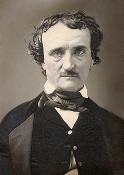

(Boston, Estados Unidos, 19 de enero de 1809-Baltimore, Estados Unidos, 7 de octubre de 1849) fue un escritor, poeta, crítico y periodista romántico12 estadounidense, generalmente reconocido como uno de los maestros universales del relato corto, del cual fue uno de los primeros practicantes en su país. Fue renovador de la novela gótica, recordado especialmente por sus cuentos de terror. Considerado el inventor del relato detectivesco, contribuyó asimismo con varias obras al género emergente de la ciencia ficción.3 Por otra parte, çfue el primer escritor estadounidense de renombre que intentó hacer de la escritura su modus vivendi, lo que tuvo para él lamentables consecuencias.
El bisabuelo paterno de Poe, John Poe, emigró de Irlanda a Estados Unidos en el siglo xviii y se hizo granjero, casándose con una inglesa; ambos pretendían ser de ascendencia noble. Uno de sus diez hijos fue David Poe, quien a su vez se casó con una emigrante irlandesa, Elizabeth Cairnes. Vivían en Baltimore, Maryland; David Poe era carpintero y, al estallar la revolución contra los ingleses, llegó a prestar dinero al ejército.30 Por méritos, recibió el título honorífico de «general».31 David y Elizabeth tuvieron siete hijos. El mayor, David, fue el padre de Edgar; la segunda hija , María (más tarde María Clemm), fue la tía y suegra del poeta (madre de su mujer, Virginia). La abuela materna de Edgar, Elizabeth Arnold, fue cantante de ópera y actriz romántica y, con su hija
Edgar Allan Poe nació el 19 de enero de 1809 en la ciudad de Boston, donde ya había nacido su hermano mayor, William Henry Leonard (1807). La hermana menor, Rosalie, nació en Richmond, en 1810.33 Edgar pudo haber recibido dicho nombre por un personaje de William Shakespeare que aparece en la obra El rey Lear, que representaban los padres en 1809, año de su nacimiento.34 David Poe abandonó a su familia en 1810,35 y su mujer, Elizabeth, murió un año después de tuberculosis; tenía veinticuatro años
Los cuentos de terror o cuentos góticos constituyen su obra más conocida192 y propiamente genuina.193 Heredero directo de dicha corriente, según el estudioso Benjamin F. Fisher, Poe pretende, sin embargo, no tanto «helar la sangre» del lector («curdling the blood», expresión inglesa de la época) como compatibilizar lo gótico con la plausibilidad psicológica, logrando elevar el género a la categoría de gran arte.194 El bostoniano modifica el goticismo, además, restándole elementos sobrenaturales, como en su relato «El gato negro», en que el desencadenante del horror final es un gato vivo. Lo que traza de algún modo Poe en sus principales relatos es una suerte de «geografía de la imaginación». Entre los herederos directos del goticismo poeano, añade Fisher, se encuentran Edith Wharton, William Faulkner, Flannery O'Connor, Hart Crane, Stephen King, y muchos otros.195